지역 검색에서 우리 업종이 어떻게 보이는지, 주변 업체 홈페이지·플레이스가 무엇을 강조하는지 봅니다.
← 전체 서비스
고객이 우리 사업장을
서비스 03 · 홈페이지 제작
1:1 맞춤 홈페이지 · 원하시는 디자인 방향 반영
고객이 우리 사업장을
신뢰할 수 있는 이유를
보여주는 홈페이지.
원장님의 경력과 운영 방식을 손님이 이해하는 말로 정리합니다.
마음에 드는 사이트나 화면이 있다면 링크나 캡처로 보여주세요. 글씨·색감·배치 중 좋았던 부분을 알려주시면 됩니다.
그 방향을 참고해 우리 사업장에 맞는 문구와 화면을 1:1로 설계합니다.
참고할 곳이 없다면 브랜드 진단에서 함께 방향을 잡습니다.
지역 사업체에 홈페이지가 필요한 이유
지역 손님은 연락하기 전에
한 번 더 확인합니다.
가까운 곳 두세 군데를 비교하며 “여기 제대로 된 곳인가?”를 살펴봅니다. 홈페이지는 원장님 소개와 이용 정보를 한곳에서 보여주고 문의로 연결하는 역할을 합니다.
- 1네이버에서 검색플레이스·블로그를 보고 후보를 두세 곳으로 좁힙니다.
- 2업체 이름으로 다시 검색“여기 믿어도 되나?” 한 번 더 찾아봅니다.
- 3홈페이지에서 확인하고 문의원장 소개, 비용, 이용 순서를 보고 문의할지 판단합니다. 찾는 정보가 없으면 문의를 미룰 수 있습니다.
확인할 곳이 없을 때, 손님 속마음
- “작은 곳인가? 금방 없어지면 어쩌지”
- “비용이랑 절차를 모르겠네, 전화하기 부담된다”
- “다른 데도 한번 더 볼까”
원장님 홈페이지가 있을 때
- “제대로 운영하는 곳이구나”
- “원장님 경력 보니 믿고 맡겨도 되겠다”
- “비용·절차가 다 나와 있네, 문의해 보자”
지역 사업일수록
동네 고객이 궁금해할 정보를 한곳에서 확인하게 합니다.
플레이스만으로 서비스 범위와 신청 과정을 모두 설명하기 어려울 수 있습니다. 원장님 이야기가 담긴 홈페이지에서는 누가, 무엇을, 어떻게 제공하는지 한곳에서 확인할 수 있습니다.
플레이스와 홈페이지의 역할
플레이스는 발견되는 곳,
홈페이지는 신뢰를 확인하는 곳입니다.
둘 중 하나로 다른 하나를 대신하기 어렵습니다. 맡는 일이 다르기 때문입니다.
DISCOVER · 발견네이버 플레이스검색에서 처음 만나는 곳기본 정보, 대표 이미지, 소개글, 서비스, 문의 동선으로 “가볼 만한 곳인가”를 판단하게 합니다.
TRUST · 신뢰 확인홈페이지연락할 이유를 확인하는 곳원장 전문성, 서비스 차별점, 운영 방식, 비용·절차를 한 흐름으로 보여주고 상담으로 연결합니다.
블로그는 그 신뢰를 계속 쌓는 곳입니다. 세 채널이 같은 전문성과 같은 메시지를 전하도록 맞추는 것이 로컬핀이 하는 일입니다.
손님마다 보는 순서는 다릅니다. 플레이스를 거치지 않고 업체 이름으로 바로 홈페이지를 찾는 분도 있습니다.
AI 분석 기반 홈페이지 기획
AI는 분석하고, 로컬핀은 실행합니다.
지역 검색 결과와 주변 업체 공개 정보를 정리해, 우리 사업장이 강조해야 할 점을 찾습니다. 그 결과를 첫 화면 문장과 섹션 구성에 반영합니다.
네이버 검색 결과, 플레이스 공개 정보, 경쟁업체 공개 정보, 원장님이 주신 경력·서비스 자료를 씁니다.
AI가 자료를 정리·비교하고, 로컬핀이 직접 검토해 첫 화면 메시지와 섹션 순서를 정합니다.
다른 곳과 겹치지 않는 강점이 먼저 보이는 홈페이지 구성과 문장 방향을 받습니다.
AI가 홈페이지를 자동으로 만들지 않습니다.분석 결과는 참고 자료입니다. 어떤 말을 첫 화면에 둘지, 무엇을 빼야 할지는 로컬핀이 원장님 자료와 함께 직접 판단합니다.
브랜드 메시지와 서비스 구조
첫 화면의 약속부터 상담 신청까지,
한 흐름으로 읽히게 짭니다.
기본은 한 페이지에 최대 8개 섹션입니다. 업종과 자료에 따라 순서와 내용은 달라집니다.
첫 화면 약속우리 사업장이 손님에게 하는 약속을 한 문장으로 보여줍니다.
원장 소개경력·자격과 이 일을 하는 이유를 사실대로 정리합니다.
서비스·과정무엇을 제공하는지 손님이 고르기 쉽게 나눕니다.
이용 방법·비용신청 절차와 비용, 지원 제도를 찾기 쉽게 둡니다.
운영 방식·차별점다른 곳과 다르게 운영하는 점을 구체적으로 보여줍니다.
현장 사진실제 공간과 사람을 보여 처음 오는 손님의 걱정을 줄입니다.
자주 묻는 질문상담 때마다 받는 질문에 미리 답해 둡니다.
오시는 길·상담 신청읽고 난 뒤 바로 연락할 수 있게 마무리합니다.
원장 경력·전문성의 신뢰 표현
원장님이 곧 브랜드입니다.
그래서 경력을 손님의 말로 바꿉니다.
“경력 ○년”만 적으면 손님에게 잘 와닿지 않습니다. 그 경력이 손님에게 어떤 차이를 주는지까지 씁니다.
있는 그대로, 확인할 수 있게
자격과 경력은 사실대로 적고, 손님이 궁금해할 순서로 정리합니다.
과장된 숫자나 지어낸 후기는 쓰지 않습니다.원장님이 지키는 방식
상담 때 늘 하시는 말, 지켜 온 원칙을 첫 화면과 소개 글에 담습니다.
다른 곳과 겹치지 않는 문장이 여기서 나옵니다.누가 운영하는지 보이게
원장님 사진과 실제 공간을 보여, 처음 연락하는 손님의 부담을 줄입니다.
사진이 부족하면 필요한 컷을 미리 안내합니다.모바일 화면과 상담 동선
손님이 휴대폰으로 열어 보고, 바로 상담을 신청하게.
행복요양보호사교육원과정 · 개강 · 상담
현장 10년 원장이 직접 가르칩니다
실습까지 책임지는
요양보호사 과정 상담 신청개강 일정
요양보호사 과정 상담 신청개강 일정
주간반야간반주말반
현장 10년 원장
실습까지
책임지는 과정 상담 신청
책임지는 과정 상담 신청
주간야간
예시 화면 · 업체명은 가상
- 휴대폰에서 먼저 보기 좋게지역 손님은 휴대폰으로 많이 봅니다. 글씨와 버튼을 크게, 문단은 짧게 나눕니다.
- 어디서든 상담 버튼읽다가 바로 연락할 수 있게 상담 버튼을 곳곳에 연결합니다.
- 신청 기능과 확인 화면휴대폰에서 신청서를 보낼 수 있게 하고, 들어온 신청을 원장님 전용 관리 페이지에서 확인하게 합니다.
- 여러 화면 크기 점검공개 전에 휴대폰·태블릿·PC 화면에서 글자가 잘리거나 깨지는 곳이 없는지 확인합니다.
실제 제작 사례
업장마다 첫 화면에서 답해야 할 질문이 다릅니다
대표가 직접 운영하는 교육원과, 홍보·마케팅을 총괄하는 산후관리 업체의 홈페이지입니다. 같은 틀로 만들지 않았습니다. 색감뿐 아니라 첫 화면에 담는 내용과 순서가 업장마다 달라집니다.

산후관리 분야 온라인 홍보·브랜드 마케팅 총괄 사례
산후도우미 · 정부지원 바우처 · 수원
사임당 홈케어 수원지사
“소중한 시작을 위한 품격 있는 돌봄.”
“누가 우리 집에 맞는 관리사님을 골라주나요?” 첫 화면에서 대표원장 직접 1:1 상담을, 바로 아래 실제 산모님 후기를 보여 줍니다.
- 대표원장 직접 1:1 상담을 첫 화면 약속으로
- 실제 산모님 후기·대표 경력·자격을 신뢰 근거로
- 정부 지원 이용 절차·월별 예약 현황 안내

직접 운영 및 온라인 브랜드 마케팅 총괄 사례
요양보호사교육원 · 용인 수지
상현동요양보호사교육원
“배움의 시작부터, 새로운 내일까지.”
“언제 시작하고, 비용은 얼마인가요?” 첫 화면 오른쪽에 지금 진행 중인 기수와 다음 개강, 국비지원 안내를 바로 보여 줍니다.
- “처음 하는 공부도 괜찮다”는 약속을 첫 화면에
- 요일별 전담 강사진·개별 보충·CBT 연습을 신뢰 근거로
- 진행 중인 기수·다음 개강·내일배움카드를 한눈에
실제 구성 공개
사임당 홈케어 수원지사 홈페이지는 이렇게 구성했습니다.
위에서 아래로 내려가며, 산모님이 궁금해하는 순서대로 답합니다.
누가 상담하나요? → 믿어도 되나요? → 무엇을 해 주나요? → 어떻게 신청하나요?
- 01 · 첫 화면소중한 시작을 위한 품격 있는 돌봄.
대표원장 직접 1:1 상담을 첫 약속으로 걸고, 네이버 상담 예약과 실제 후기 보기 버튼을 바로 둡니다.
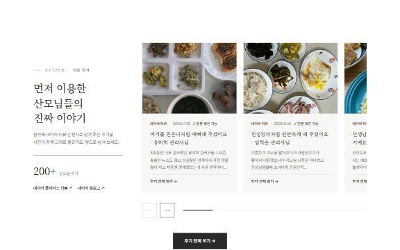
02 · 산모님 후기먼저 이용한 산모님들의 진짜 이야기맘카페·네이버 리뷰·손편지 후기를 사진과 함께 옆으로 넘겨 봅니다. 처음 맡기는 불안을 먼저 풀어 드립니다.
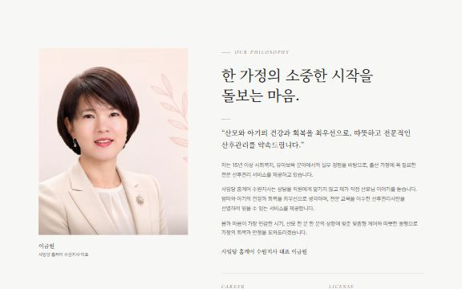
03 · 대표 소개한 가정의 소중한 시작을 돌보는 마음.대표원장 사진과 약속 한 문장, 경력·자격을 한 화면에. 누가 상담하는지 얼굴로 보여 줍니다.
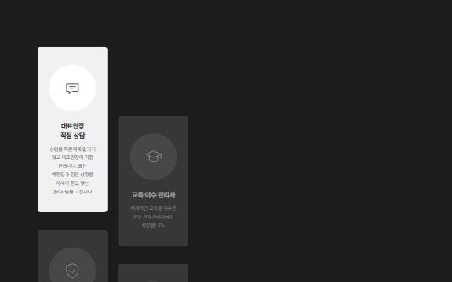
04 · 왜 사임당인가대표원장이 직접 상담하고 직접 배정하는직접 상담, 교육 이수 관리사, 신원·건강 검증, 맞춤 배정, 1:1 돌봄, 날짜와 금액 미리 안내. 여섯 가지 약속입니다.
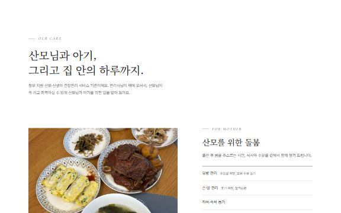
05 · 돌봄 서비스산모님과 아기, 그리고 집 안의 하루까지.산모·아기·집안일로 나눠, 관리사님이 댁에서 맡아 드리는 일을 실제 사진과 함께 정리합니다.
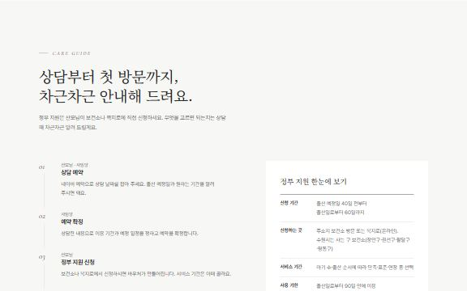
06 · 이용 안내상담부터 첫 방문까지, 차근차근상담 예약부터 첫 방문까지의 순서, 정부 지원 신청 방법, 자주 묻는 질문을 한곳에 모읍니다.
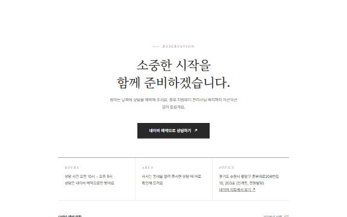
07 · 예약소중한 시작을 함께 준비하겠습니다.월별 예약 현황과 상담 시간·지역·사무실 위치를 보여 주고, 네이버 예약으로 바로 이어집니다.
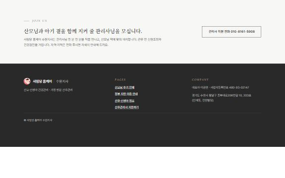
08 · 관리사 모집함께할 관리사님을 모십니다.관리사님을 직접 만나고 신원조회·건강검진을 거친다는 안내로, 마지막까지 신뢰를 이어 갑니다.
구간과 순서는 업장마다 달라집니다. 브랜드 진단에서 손님이 묻는 순서를 먼저 정하고, 그 순서대로 설계합니다. 사임당 홈페이지 직접 보기 ↗
실제 구성 공개
상현동요양보호사교육원 홈페이지는 이렇게 구성했습니다.
처음 공부를 시작하는 분이 궁금해하는 순서대로 답합니다.
언제 시작하나요? → 따라갈 수 있을까요? → 누가 가르치나요? → 비용과 신청은요?
- 01 · 첫 화면배움의 시작부터, 새로운 내일까지.
“처음 하는 공부도 괜찮다”는 약속과 함께, 오른쪽에 지금 진행 중인 기수와 다음 개강을 바로 보여 줍니다.
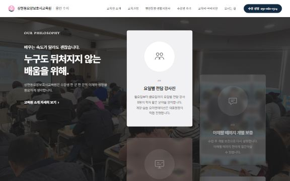
02 · 왜 상현동인가누구도 뒤처지지 않는 배움을 위해.실제 수업 사진 위에 요일별 전담 강사진, 개별 보충, CBT 연습 같은 약속을 카드로 보여 줍니다.
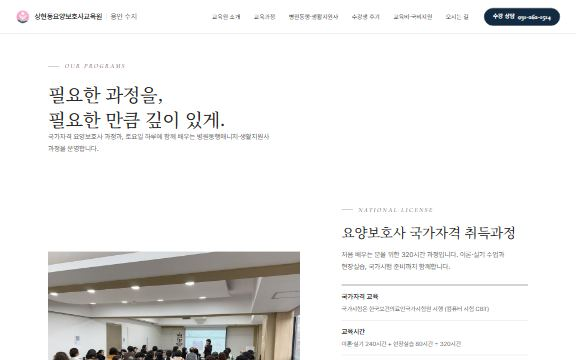
03 · 교육과정필요한 과정을, 필요한 만큼 깊이 있게.요양보호사 국가자격 과정과 병원동행매니저·생활지원사 과정을 사진과 표로 나눠 안내합니다.
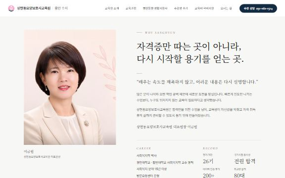
04 · 대표원장 소개다시 시작할 용기를 얻는 곳.원장 사진과 약속 한 문장, 경력·자격, 운영 기록을 한 화면에. 누가 가르치는지 얼굴로 보여 줍니다.
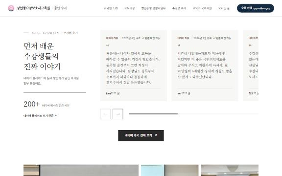
05 · 수강생 후기먼저 배운 수강생들의 진짜 이야기네이버 영수증 인증 리뷰를 옆으로 넘겨 봅니다. 원문 보기로 바로 이어집니다.
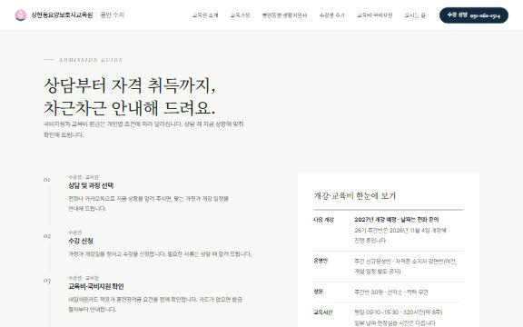
06 · 수강 안내상담부터 자격 취득까지, 차근차근상담 → 수강 신청 → 국비지원 확인 순서와, 개강·교육비를 한눈에 보는 표를 둡니다.
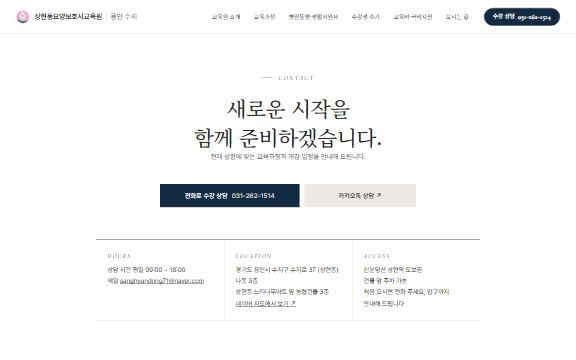
07 · 상담새로운 시작을 함께 준비하겠습니다.전화·카카오톡 상담 버튼과 상담 시간, 위치, 교통 안내로 마무리합니다.
같은 사람이 만들어도 업종이 다르면 구간과 순서가 달라집니다. 상현동 홈페이지 직접 보기 ↗
홈페이지 제작 안내
무엇을 만들고, 어디까지 제공하는지 명확하게 안내합니다.
로컬핀은 제작 전에 홈페이지 구성과 제공 범위를 먼저 안내합니다. 원장님의 전문성과 사업장의 강점이 전달되도록 필요한 요소를 체계적으로 설계합니다.
제작비에 포함
- 반응형 원페이지휴대폰·태블릿·PC에 맞춰 바뀌는 한 페이지 홈페이지
- 기본 최대 8개 섹션첫 화면부터 상담 신청까지의 구성
- 브랜드 메시지·신뢰 중심 기획공개 정보와 원장님 자료를 바탕으로 한 문구 설계
- 모바일 점검공개 전 여러 화면 크기에서 확인
- 상담 버튼 연결신청서·연락 버튼 연결과 작동 확인
- 기본 검색엔진 설정네이버·구글 기본 등록
- 통합 수정 2회공개 전, 수정 요청을 한 번에 모아 보내 주시면 2회까지 반영합니다
- 납품 후 1개월 보완경미한 변경 총 2건, 오탈자·제작 오류 정정은 횟수와 별도
따로 드는 것
- 추가 기능 예약·결제·회원 기능 등은 별도 견적입니다.
- 추가 섹션·페이지·디자인 기본 범위를 넘거나 범위가 바뀌면 별도 견적에 적습니다.
- 도메인·호스팅 원장님 명의로 등록하고 실비로 따로 안내합니다.
- 유료 플러그인·외부 솔루션 쓰게 되면 그 비용은 따로 듭니다.
- 납품 보완 이후 관리 필요하면 홈페이지 유지관리 월 9.9만원을 고르실 수 있습니다.
WHY LOCALPIN / WEBSITE
홈페이지가 '있다'에서 끝나지 않도록
첫 화면의 문장부터
첫 화면의 문장부터
상담 신청 이후까지 설계합니다.
공개된 온라인 정보와 원장님 자료로 경력과 서비스 과정을 정리하고, 휴대폰에서 읽고 문의하기 쉬운 한 페이지로 만듭니다.
1:1문구·화면 맞춤 설계
1개월납품 후 보완
다른 견적서에서 확인할 질문로컬핀이 제공하는 범위
첫 화면의 문구는 누가 만드나요?
사진·상호 교체 외에 메시지 설계가 포함되는지 보세요.
브랜드 진단·자료 확인으로 첫 문장을 씁니다.
공개된 정보를 먼저 확인하고 부족한 것만 여쭤봅니다. 경력·운영 원칙·자주 받는 질문을 손님이 이해할 수 있는 소개와 서비스 설명으로 바꿉니다.
문의가 들어온 뒤에는 어디서 보나요?
상담 버튼의 작동과 신청 내역 확인 방법을 보세요.
신청 기능과 관리 화면을 만듭니다.
휴대폰에서 신청할 수 있게 하고, 들어온 신청을 원장님 전용 관리 페이지에서 확인하게 합니다.
도메인과 검색 등록은 누가 맡나요?
주소 소유 명의와 실비가 견적에 적히는지 확인하세요.
원장님 명의 주소와 기본 검색 등록을 안내합니다.
도메인·호스팅 비용은 실비로 분리하고 네이버·구글 기본 등록까지 진행합니다.
납품 뒤 수정과 유지관리 범위는?
무엇이 무료이고 언제부터 월 비용이 생기는지 보세요.
1개월 납품 보완과 월 관리를 구분합니다.
공개 전 통합 수정은 2회, 납품 후 1개월 동안 경미한 변경은 총 2건입니다. 오탈자·제작 오류 정정은 횟수와 별도이고, 이후 유지관리(경미한 수정 월 3건)는 선택 상품입니다.
말로만 맞춤 제작을 설명하지 않겠습니다. 실제 제작 홈페이지 두 곳의 첫 화면과 신청 동선을 직접 확인하세요.
내 홈페이지 범위 진단받기 →SIGNATURE · 대표 패키지
플레이스도 함께 바꾼다면,
한 번에 설계하는 편이 명확합니다.
홈페이지와 플레이스 BRANDING을 따로 맡길 때와 SIGNATURE로 맡길 때의 시작가를 비교했습니다.
홈페이지 + 플레이스 BRANDING
기본 구성 기준 49만원 절약. 플레이스 소개글과 홈페이지 첫 화면을 한 번의 브랜드 진단·자료 확인으로 함께 정리합니다. 손님이 플레이스에서 본 말과 홈페이지에서 읽는 말이 같아집니다.
SIGNATURE 진단받기 →홈페이지 하나만 필요해도 됩니다.
기존 플레이스가 잘 정리되어 있다면 홈페이지 제작만 신청할 수 있습니다. 제작비는 반응형 원페이지 149만원부터이며, 추가 기능은 진단 후 견적에 적습니다.
홈페이지 단품 진단받기 →가격표 기준 시작가의 산술 비교입니다. 추가 기능과 도메인·호스팅 등 외부 비용은 별도입니다. 모든 금액 부가세 별도.
홈페이지에서 시작하는 구성
홈페이지만 만들지, 검색 첫 화면까지 연결할지.
처음 한 번 제작비와 이후 월 관리비를 나눠서 확인하세요. 처음부터 모든 채널을 맡기실 필요는 없습니다. 진단 후 필요한 곳부터 제안합니다.
홈페이지 제작
149만원부터 1회
원장 소개부터 상담 신청까지, 반응형 원페이지(최대 8개 섹션).
납품 후 1개월 보완 포함
이 구성으로 진단받기 →홈페이지 + 플레이스 BASIC
179만원부터 1회
따로 198만원부터 → 함께 179만원부터기본 구성 기준 19만원 절약
홈페이지 + 플레이스 기본 정보·소개글·이미지 2종.
플레이스 1개월 점검 포함 · 기존 로고 활용
이 구성으로 진단받기 →SIGNATURE
홈페이지 + 플레이스 BRANDING
199만원부터 1회
따로 248만원부터 → 함께 199만원부터기본 구성 기준 49만원 절약
홈페이지 + 플레이스 이미지 5종·AI 지역 분석·소개글 정비.
로고: 기존 로고 정리 또는 기본형 1종
플레이스 3개월 점검 · 홈페이지 1개월 보완 포함
이 구성으로 진단받기 →ALL-IN-ONE
홈페이지 + 플레이스 BRANDING + 블로그
249만원부터 1회
따로 287만원부터 → 함께 249만원부터기본 구성 기준 38만원 절약
SIGNATURE + 블로그 초기 구축(세팅·초기 글 2건).
매달 글 발행은 별도(월 관리)
이 구성으로 진단받기 →모든 가격은 부가세 별도입니다. 제작 범위는 무료 브랜드 진단 후 서면 견적에서 확정합니다. 전문 로고 개발·여러 시안·상표 검토는 별도 견적입니다.
진행 순서와 제작 자료
공개된 정보부터 확인하고,
부족한 것만 여쭤봅니다.
처음부터 많은 자료를 준비하지 않으셔도 됩니다. 플레이스를 함께 하시면 그때 정리한 소개와 이미지를 홈페이지에도 그대로 써서 더 빨라집니다.
무료 브랜드 진단
계약 전
플레이스·홈페이지·블로그 공개 정보를 AI로 정리하고 로컬핀이 직접 검토합니다.
우선순위·자료 안내
진단 결과
먼저 손볼 곳과 제작에 필요한 자료를 알려 드립니다.
서면 견적·계약
금액·범위·일정
최종 금액과 범위를 서면으로 안내합니다. 계약과 결제 후 제작합니다.
자료 확인·제작
필요할 때 최대 30분
공개 정보로 알 수 없는 경력·운영 원칙만 여쭤보고, 제작해 검수받습니다.
공개·1개월 보완
원장님 명의 주소
주소 연결과 기본 검색엔진 설정 후 공개하고, 한 달 동안 보완합니다.
원장님 경력·자격자격증, 경력, 이 일을 시작한 이유 정도면 충분합니다.
서비스·비용·이용 절차지금 상담 때 설명하시는 내용을 그대로 주셔도 됩니다.
사진원장님·공간·현장 사진입니다. 부족하면 필요한 컷을 안내합니다.
마음에 드는 참고 사이트있으면 링크나 캡처로, 없어도 진단에서 함께 정합니다.
제작 기간기본형 홈페이지는 자료 확정 후 약 10영업일, SIGNATURE는 자료 확정 후 약 2~3주가 걸립니다. 경미한 수정은 보통 2~3영업일이고, 추가 기능이나 복잡한 작업은 따로 협의합니다. 기간은 자료 제공과 피드백 상황에 따라 달라질 수 있습니다.
수정 기준공개 전 통합 수정 2회입니다. 수정 요청은 한 번에 모아 보내 주세요. 오탈자·계약 불이행·제작 오류 수정은 횟수에 넣지 않고, 추가 디자인이나 범위 변경(새 섹션·기능 추가, 디자인 전면 변경)은 별도 견적입니다.
제작 149만원부터→1개월 납품 보완→유지관리 월 9.9만원 또는 GROWTH+유지관리 월 34.9만원전체 상품·패키지 보기 →
홈페이지 · 관리1개월 납품 보완이 끝난 뒤에는?필요할 때만 유지관리를 맡기세요. BASIC·GROWTH·PREMIUM에는 홈페이지 관리가 없습니다.
홈페이지 유지관리
고장 없이 늘 열리는 홈페이지
월 9.9만원1개월 단위 · 부가세 별도
- 월 1회 접속·상담 신청 테스트 (신청 알림까지 확인)
- 도메인·보안 인증(https) 만료일 확인과 갱신 안내
- 휴대폰·PC 화면 깨짐 확인
- 네이버·구글 검색 등록 상태 확인
전체 제공 범위 보기 +2
- 기존 글·이미지의 경미한 수정 월 3건
- 점검 결과 한 줄 안내
도메인·호스팅 비용은 실비 별도 · 새 섹션·기능·디자인 변경은 따로 견적
유지관리 문의하기 →
GROWTH + 홈페이지 유지관리
플레이스·블로그 운영과 홈페이지 관리를 함께
월 34.9만원최소 3개월, 이후 1개월씩 · 따로 하면 월 39.8만원, 매달 4.9만원 적게
- GROWTH 전부 (플레이스 점검 월 2회·소식 월 2건, 블로그 월 3건, 브랜드 이미지 월 1건, AI 활용 키워드 분석, 월간 PDF 브랜드 브리핑)
- 홈페이지 유지관리 전부
보완 기간엔 GROWTH 월 29.9만원, 끝나면 월 34.9만원
이 구성으로 진단받기 →자주 묻는 질문
홈페이지 제작, 이런 점을 많이 물어보세요
도메인·호스팅 비용은 따로 드나요?
네. 홈페이지 주소(도메인)는 원장님 명의로 등록하고, 도메인·호스팅 비용은 실비로 따로 안내드립니다.
유료 플러그인이나 외부 솔루션을 쓰게 되면 그 비용도 따로 듭니다. 제작비 149만원부터에는 포함되지 않습니다.
마음에 드는 홈페이지를 참고해서 만들어 주시나요?
네. 링크나 캡처를 보내 주시고 마음에 든 부분을 알려주세요.
색감, 배치, 메뉴 구성 등을 참고해 우리 사업장에 맞춰 새로 디자인합니다.
참고할 곳이 없어도 브랜드 진단에서 디자인 방향을 함께 정합니다.
자료를 많이 준비해야 하나요?
아닙니다. 플레이스·블로그·기존 홈페이지 등 공개된 정보를 먼저 확인합니다.
그래도 알 수 없는 경력·운영 원칙만 여쭤봅니다. 필요할 때 최대 30분 정도입니다.
AI가 홈페이지를 자동으로 만드나요?
아닙니다. AI는 검색 결과와 공개 정보를 정리·비교하는 데 씁니다.
첫 화면 문장과 섹션 구성은 로컬핀이 원장님 자료와 함께 직접 검토해 정합니다.
제작 기간은 얼마나 걸리나요?
기본형 홈페이지는 자료 확정 후 약 10영업일, 플레이스까지 함께하는 SIGNATURE는 자료 확정 후 약 2~3주입니다.
경미한 수정은 보통 2~3영업일 안에 반영합니다. 추가 기능이나 복잡한 작업은 따로 협의하며, 기간은 자료 제공과 피드백 상황에 따라 달라질 수 있습니다.
섹션이나 페이지가 더 필요하면요?
기본은 최대 8개 섹션으로 된 반응형 원페이지입니다.
섹션·페이지를 늘리거나 예약·결제 같은 기능을 더하면 가격이 달라질 수 있어, 진단 후 견적에 적어 확정합니다.
완성 후에 고칠 수 있나요?
공개 전에는 통합 수정 2회를 반영합니다. 수정 요청은 한 번에 모아 보내 주세요.
납품 후 1개월 동안은 경미한 변경을 총 2건 반영하고, 오탈자·제작 오류는 횟수와 상관없이 고칩니다. 추가 디자인이나 범위 변경은 별도 견적입니다.
그 뒤에도 관리를 맡기려면 홈페이지 유지관리(월 9.9만원, 경미한 수정 월 3건)를 선택할 수 있습니다.
GROWTH에 홈페이지 유지관리가 포함되나요?
포함되지 않습니다. GROWTH(월 29.9만원)는 플레이스·블로그 운영입니다.
홈페이지 유지관리까지 함께 맡기시면 월 34.9만원(최소 3개월, 이후 1개월씩)입니다.
플레이스 없이 홈페이지만 맡겨도 되나요?
네. 하나만 맡기셔도 됩니다.
이 경우에도 브랜드 진단부터 해서 첫 화면 문장을 만듭니다.
플레이스도 함께 만드시면 SIGNATURE 199만원부터입니다.
어떤 업종 홈페이지를 만드시나요?
요양보호사교육원, 산후관리사 파견업체, 방문요양센터처럼 원장님의 경력과 운영 방식이 선택 이유가 되는 지역 사업장이 중심입니다.
평생교육원·학원, 필라테스·뷰티 같은 지역 전문 서비스도 브랜드 진단 후 함께할 수 있는지 안내드립니다.
홈페이지와 같은 이야기로 맞추면 더 강해집니다
서비스 01네이버 플레이스 브랜딩
손님이 가장 먼저 보는 곳. 원장님 이야기를 맞춤 이미지와 소개 글에 담습니다.
BRANDING 99만원 · 구축 후 3개월 기본 점검 서비스 02블로그 구축 + 운영손님이 묻는 질문에 답하는 글로 신뢰를 계속 쌓습니다.
초기 구축 39만원 · 매달 운영은 GROWTH함께 맡기실 때는 정해진 패키지로 안내합니다. 홈페이지+플레이스 SIGNATURE 199만원부터, 세 채널을 함께 갖추는 ALL-IN-ONE 249만원부터. 매달 관리는 GROWTH 월 29.9만원 등 요금제에서 고르실 수 있습니다.
우리 사업장, 첫 화면에 무엇을 담을까요?
공개된 정보부터 확인하고, 홈페이지 첫 화면에 먼저 보여줄 점을 정리해 드립니다. 마음에 드는 사이트가 있다면 신청서에 주소와 좋았던 부분을 남겨주세요.